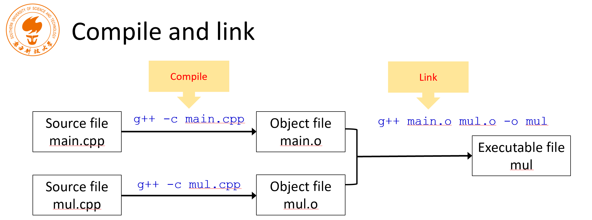

C/C++：从基础语法到优化策略
Lecture 1

gcc 常用代码
xxxxxxxxxxg++ Test.cpp --std=c++11 -o Test&&./TestLecture 2
size_t
- Computer memory keeps increasing
- 32-bit int was enough in the past to for data length
- But now it is not.
- Unsigned integer
- Type of the result of sizeof operator
- Can store the maximum size of a theoretically possible object of any type
- 32-bit, or 64-bit
Fixed width integer types (since C++11)

intmax.cpp
xxxxxxxxxxusing namespace std;int main(){ cout << "INT8_MAX=" << INT8_MAX << endl;}- other examples
xxxxxxxxxx6.02e23L // long double 6.02e23f // float 6.02e23 // double- auto is placeholder type specifier.
- The type of the variable will be deduced from its initializer.
xxxxxxxxxxauto a = 2; // type of a is intauto bc = 2.3; // type of b is doubleauto c ; //valid in C, error in C++auto d = a * 1.2; auto a = 2; // type of a is int- Question: will a be converted to a double type variable?
xxxxxxxxxxa = 2.3;- No! 2.3 will be converted to a int 2, then assigned to a
Data type conversions
conversion.cpp
xxxxxxxxxxint num_int1 = 9; // initializing an int value to num_int1int num_int2 = 'C'; // implicit conversion 隐式类型转换 将8位转换为32位int num_int3 = (int)'C'; // explicit conversion, C-styleint num_int4 = int('C'); // explicit conversion, function styleint num_int5 = 2.8; //implicit conversionfloat num_float = 2.3; //implicit conversion from double to floatshort num_short = 650000; Lecture 3
Non-Boolean Expressions
- They will be converted to bool implicitly if it is feasible.
xxxxxxxxxxfloat count = 0.2f;if (count) //not recommend to use a float-point number cout << "There are some." << endl;- Pointers are also frequently used as conditions
xxxxxxxxxxint * p = new int[1024];if (!p) // if(p == NULL) cout << "Memory allocation failed." << endl;Lecture 4
Arrays of unknown size
- The number is not specified in the declaration.
xxxxxxxxxxint num_array[ ] = {1, 2, 3, 4}; // the type of num_array is "array of 4 int"- The arguments of a function
xxxxxxxxxxfloat array_sum(float values[], size_t length);float array_sum(float *values, size_t length);Array-style strings
- An array-style string (null-terminated strings/arrays of characters) is a series of characters stored in bytes in memory.
- This kind of strings can be declared as follows
initchar.cpp
数组类型的字符串要用\0来结束
xxxxxxxxxxchar rabbit[16] = {'P', 'e', 't', 'e', 'r'};char bad_pig[9] = {'P', 'e', 'p', 'p', 'a', ' ', 'P', 'i', 'g’}; //a bad one!char good_pig[10] = {'P', 'e', 'p', 'p', 'a', ' ', 'P', 'i', 'g', '\0'};- size_t strlen( const char *str ); Returns the number of characters, the first NULL will not be included.
xxxxxxxxxxchar name[10] = {'Y', 'u', '\0', 'S', '.', '0'};cout << strlen(name) << endl;- 字符串的其它特点
xxxxxxxxxxusing namespace std;int main(){ int num_array1[5] = {0,1}; // fixed length array, initialized to {0,1,0,0,0} cout << "sizeof(num_array1) = " << sizeof(num_array1) << endl;
int len = 0; while ( len < 10 ) { int num_array2[len]; //variable-length array 不可初始化 cout << "len = " << len; cout << ", sizeof(num_array2)) = " << sizeof(num_array2) << endl; len ++; }}- 不检查边界是否超出
xxxxxxxxxxint num_array[5]; for(int idx = -1; idx <= 5; idx++) num_array[idx] = idx * idx;for(int idx = -1; idx <= 5; idx++) cout << num_array[idx] << endl;- 多维数组的初始化
xxxxxxxxxxvoid init_2d_array(float mat[][], //error size_t rows, size_t cols)void init_2d_array(float mat[][3], size_t rows, size_t cols)array_sum.cpp
xxxxxxxxxxfloat array_sum(const float values[], size_t length){ float sum = 0.0f; for (int i = 0; i < length; i++) { sum += values[i]; //values[i] = 0; //error } return sum;}
int main(){ float values[4] = {1.1f, 2.2f, 3.3f, 4.4f}; float sum = array_sum(values, 4);}xxxxxxxxxxconst wchar_t[] s5 = L"ABCD"; const char16_t[] s9 = u”ABCD"; //since C++11const char32_t[] s6 = U”ABCD"; //since C++11string.h
- Copy
xxxxxxxxxxchar* strcpy( char* dest, const char* src );// Safer one: count取dest与src的最小值char *strncpy(char *dest, const char *src, size_t count);- Concatenate: appends a copy of src to dest
xxxxxxxxxxchar *strcat( char *dest, const char *src );- Compare
xxxxxxxxxxint strcmp( const char *lhs, const char *rhs );string class
- Null-terminated strings are easy to be out of bound, and to cause problems.
- string class provides functions to manipulate and examinate strings.
xxxxxxxxxxstd::string str1 = "Hello";std::string str2 = "SUSTech";std::string result = str1 + ", " + str2;- Different types of strings
xxxxxxxxxxstd::string std::wstring std::u8string //(C++20)std::u16string //(C++11)std::u32string //(C++11)- string类没有越界检查
struct
xxxxxxxxxxstruct Student{ char name[4]; int born; bool male; };struct Student stu;
strcpy(stu.name, "Yu");stu.born = 2000;stu.male = true;
struct Student stu = {"Yu", 2000, true};
struct Student students[100];students[50].born = 2002; 求某个点的L1范数
xxxxxxxxxxusing namespace std;
enum color {WHITE, BLACK, RED, GREEN, BLUE, YELLOW, NUM_COLORS};enum datatype {TYPE_INT8=1, TYPE_INT16=2, TYPE_INT32=4, TYPE_INT64=8};
struct Point{ enum datatype type; union { std::int8_t data8[3]; std::int16_t data16[3]; std::int32_t data32[3]; std::int64_t data64[3]; };};
size_t datawidth(struct Point pt){ return size_t(pt.type) * 3;}
int64_t l1norm(struct Point pt){ int64_t result = 0; switch(pt.type) { case (TYPE_INT8): result = abs(pt.data8[0]) + abs(pt.data8[1]) + abs(pt.data8[2]); break; case (TYPE_INT16): result = abs(pt.data16[0]) + abs(pt.data16[1]) + abs(pt.data16[2]); break; case (TYPE_INT32): result = abs(pt.data32[0]) + abs(pt.data32[1]) + abs(pt.data32[2]); break; case (TYPE_INT64): result = abs(pt.data64[0]) + abs(pt.data64[1]) + abs(pt.data64[2]); break; } return result;}
int main(){ enum color pen_color = RED; pen_color = color(3); //convert int to enum cout << "We have " << NUM_COLORS << " pens." << endl; //pen_color += 1; //error! int color_index = pen_color; color_index += 1; cout << "color_index = " << color_index << endl;
//declaration and initialization struct Point point1 = {.type=TYPE_INT8, .data8={-2,3,4}}; struct Point point2 = {.type=TYPE_INT32, .data32={1,-2,3}}; cout << "Data width = " << datawidth(point1) << endl; cout << "Data width = " << datawidth(point2) << endl;
cout << "L1 norm = " << l1norm(point1) << endl; cout << "L1 norm = " << l1norm(point2) << endl;
return 0;}typedef
- typedef can create an alias for a type.
- It can be used to replace a possibly complex type name.
xxxxxxxxxxtypedef int myint;
typedef unsigned char vec3b[3];
typedef struct _rgb_struct{//name _rgb_struct can be omit unsigned char r; unsigned char g; unsigned char b;} rgb_struct;myint num = 32;unsigned char color[3];vec3b color = {255, 0, 255};
rgb_struct rgb = {0, 255, 128};
typedef int wchar_t; typedef long wchar_t; Lecture 5
Pointers
xxxxxxxxxxusing namespace std;int main(){ int num = 10; int *p1 = NULL; p1 = # cout<<*p1<<" "<<p1<<endl; return 0;}xxxxxxxxxxusing namespace std;
struct Student{ char name[4]; int born; bool male; };
int main(){ Student stu = {"Yu", 2000, true}; Student * pStu = &stu;
cout << stu.name << " was born in " << stu.born << ". Gender: " << (stu.male ? "male" : "female") << endl;
strncpy(pStu->name, "Li", 4); pStu->born = 2001; (*pStu).born = 2002; pStu->male = false;
cout << stu.name << " was born in " << stu.born << ". Gender: " << (stu.male ? "male" : "female") << endl; printf("Address of stu: %p\n", pStu); //C style cout << "Address of stu: " << pStu << endl; //C++ style cout << "Address of stu: " << &stu << endl; cout << "Address of member name: " << &(pStu->name) << endl; cout << "Address of member born: " << &(pStu->born) << endl; cout << "Address of member male: " << &(pStu->male) << endl;
cout << "sizeof(pStu) = " << sizeof(pStu) << endl; return 0;}xxxxxxxxxxint num = 1;int another = 2;//You cannot change the value the p1 points to through p1const int * p1 = #// 不能用指针修改num的值*p1 = 3; //errornum = 3; //okay//You cannot change value of p2 (address) p2只能指向numint * const p2 = #*p2 = 3; //okayp2 = &another; //error//You cannot change either of themconst int* const p3 = #xxxxxxxxxxint foo(const char * p){ // the value that p points to cannot be changed // play a trick? // 不能将const指针赋给普通指针 char * p2 = p; //syntax error //... return 0;}int numbers[4] = {0, 1, 2, 3};// 这里增加的是一个元素 不是一个字节int * p = numbers + 1;p++;*p = 20;*(p-1) = 10;p[1] = 30;Arithmetic.cpp
xxxxxxxxxxusing namespace std;// 宏定义
int main(){ int numbers[4] = {0, 1, 2, 3}; PRINT_ARRAY(numbers, 4)
int * p = numbers + 1; // point to the element with value 1 p++; // point to the element with value 2
cout << "numbers = " << numbers << endl; cout << "p = " << p << endl;
*p = 20; //change 2 to 20 *(p-1) = 10; //change 1 to 10 p[1] = 30; //change 3 to 30
PRINT_ARRAY(numbers, 4)
return 0;}Memoey Allocation
xxxxxxxxxx//Allocate size bytes of uninitialized storage.void* malloc( size_t size )//Allocate 4 bytes and convert the pointer to (int *) explicitly.int * p1 = (int*) malloc (4);//Question: 不好 仅针对这个例子没问题 只越界1个字节int * p1 = (int*) malloc (3);Memory leak
xxxxxxxxxx// The dynamically allocated memory must be deallocated explicitly!void free( void* ptr );// 此处内存泄漏了p = (int *) malloc(4 * sizeof(int));// ...p = (int *) malloc(8 * sizeof(int));// ...free (p);
void foo(){ int* p = (int *) malloc( sizeof(int)); // 释放内存前直接return 函数结束 内存泄漏 return;} //memory leakxxxxxxxxxx
void foo(){ int* p = (int *) malloc( sizeof(int)); return;} //memory leak
int main(){ int * p = NULL; p = (int *) malloc(4 * sizeof(int)); // some statements p = (int *) malloc(8 * sizeof(int)); // some statements free (p); // the first memory will not be freed
for(int i = 0; i < 1024; i++) { p = (int *) malloc(1024 * 1024 * 1024); } printf("End\n");
return 0;}// 申请1TB内存并没有崩溃 操作系统作了优化xxxxxxxxxx// C++风格动态申请内存//allocate an int, default initializer (do nothing)int * p1 = new int; //allocate an int, initialized to 0int * p2 = new int();//allocate an int, initialized to 5int * p3 = new int(5); //allocate an int, initialized to 0int * p4 = new int{};//C++11 //allocate an int, initialized to 5int * p5 = new int {5};//C++11//allocate a Student object, default initializerStudent * ps1 = new Student;//allocate a Student object, initialize the membersStudent * ps2 = new Student {"Yu", 2020, 1}; //C++11
//allocate 16 int, default initializer (do nothing) int * pa1 = new int[16];//allocate 16 int, zero initialized int * pa2 = new int[16]();//allocate 16 int, zero initialized // 花括号里什么都不写，默认置0int * pa3 = new int[16]{}; //C++11//allocate 16 int, the first 3 element are initialized to 1,2,3, the rest 0int * pa4 = new int[16]{1,2,3}; //C++11
//allocate memory for 16 Student objects, default initializerStudent * psa1 = new Student[16];//allocate memory for 16 Student objects, the first two are explicitly initializedStudent * psa2 = new Student[16]{{"Li", 2000,1}, {"Yu", 2001,1}}; //C++11
//deallocate memorydelete p1;//deallocate memorydelete ps1;//deallocate the memory of the arraydelete pa1;//deallocate the memory of the arraydelete []pa2;//deallocate the memory of the array, and call the destructor of the first elementdelete psa1;//deallocate the memory of the array, and call the destructors of all the elementsdelete []psa2;
Lecture 6
Return statement
xxxxxxxxxx/*The return type can be a fundamental type or a compound type.Pass by value:Fundamental types: the value of a constant/variable is copiedPointers: the address is copiedStructures: the whole structure is copiedfloat maxa = matrix_max(matA);*/Matrix * pMat = create_matrix(4,5);// 函数需要先检查是否正确 分配内存失败等Matrix * create_matrix(int rows, int cols){ Matrix * p = new Matrix{rows, cols}; p->pData = new float[p->rows * p->cols]{1.f, 2.f, 3.f}; // you should check if the memory is allocated successfully // and don’t forget to release the memory // 最后记得delete return p;}// If we have a lot to return// Such as a matrix addition function (A+B->C)// A suggested prototype:// To use references to avoid data copying// To use const parameters to avoid the input data is modified// To use non-const reference parameters to receive the outputbool matrix_add(const Matrix & matA, const Matrix & matB, Matrix & matC){ // check the dimensions of the three matrices // re-create matC if needed // do: matC = matA + matB // return true if everything is right}- 函数参数不要是占空间太大的数组，运行时要拷贝，消耗时间空间
内联函数与宏的对比
xxxxxxxxxxusing namespace std;
inline float max_function(float a, float b){ if (a > b) return a; else return b;}
//#define MAX_MACRO(a, b) a>b ? a : b// 一定要加括号// 宏容易出现不易发现的错误// 宏可以适用多种数据类型
int main(){ int num1 = 20; int num2 = 30; int maxv = max_function(num1, num2); cout << maxv << endl;
maxv = MAX_MACRO(num1, num2); cout << maxv << endl;
maxv = MAX_MACRO(num1++, num2++); cout << maxv << endl; cout << "num1=" << num1 << endl; cout << "num2=" << num2 << endl;
num1 = 0xAB09; num2 = 0xEF08; maxv = MAX_MACRO(num1&0xFF, num2&0xFF); cout << maxv << endl;
return 0;}OpenCV 中为了跨平台对内联函数的定义

Lecture 7
Function Templates
xxxxxxxxxxusing namespace std;
template<typename T>T sum(T x, T y){ cout << "The input type is " << typeid(T).name() << endl; return x + y;}- Explicitly instantiate
xxxxxxxxxxtemplate double sum<double>(double, double);function-pointer
- norm_ptr is a pointer, a function pointer.
- The function should have two float parameters, and returns float.
xxxxxxxxxxusing namespace std;
float norm_l1(float x, float y); //declarationfloat norm_l2(float x, float y); //declarationfloat (*norm_ptr)(float x, float y); //norm_ptr is a function pointer
int main(){ norm_ptr = norm_l1; //Pointer norm_ptr is pointing to norm_l1 cout << "L1 norm of (-3, 4) = " << norm_ptr(-3.0f, 4.0f) << endl;
norm_ptr = &norm_l2; //Pointer norm_ptr is pointing to norm_l2 cout << "L2 norm of (-3, 4) = " << (*norm_ptr)(-3.0f, 4.0f) << endl;
return 0;}
float norm_l1(float x, float y){ return fabs(x) + fabs(y);}
float norm_l2(float x, float y){ return sqrt(x * x + y * y);}- A function pointer can be an argument and pass to a function.
xxxxxxxxxx<stdlib.h>
void qsort( void *ptr, size_t count, size_t size,int (*comp)(const void *,const void *));// To sort some customized types, such as struct Pointstruct Person
Recursive Functions
Pros.
- Good at tree traversal
- Less lines of source code
Cons.
- Consume more stack memory
- May be slow.
- Difficult to implement and debug
Some Tips on Optimization
- Choose an appropriate algorithm
- Clear and simple code for the compiler to optimize
- Optimize code for memory
- Do not copy large memory
- No printf()/cout in loops
- Table lookup (sin(), cos() ...)
Lecture 8 C++ with ARM
常见指令集
- SIMD, OpenMP
- SIMD: Single instruction, multiple data
- Intel: MMX, SSE, SSE2, AVX, AVX2, AVX512
- ARM: NEON
- RISC-V: RVV(RISC-V Vector Extension)
xxxxxxxxxxcat /proc/cpuinfocat /proc/meminfouname -atoprm a -rf// 新建一个build文件夹// 进入后先使用cmake ..cmake .. // 成功后使用makemake cmake .. -DCMKE_BUILD_TYPE=Releasexxxxxxxxxxcmake_minimum_required(VERSION 3.12)
add_definitions(-DWITH_NEON)#add_definitions(-DWITH_AVX2)
project(dotp)
ADD_EXECUTABLE(dotp main.cpp matoperation.cpp)
find_package(OpenMP)if(OpenMP_CXX_FOUND) message("OpenMP found.") target_link_libraries(dotp PUBLIC OpenMP::OpenMP_CXX)endif()Lecture 9
student.hpp
类的声明写在hpp里 写在类内的是inline function
xxxxxxxxxxclass Student{ private: char name[4]; int born; bool male; public: void setName(const char * s) { strncpy(name, s, sizeof(name)); } void setBorn(int b) { born = b; } void setGender(bool isMale); void printInfo();};stduent.cpp
定义写在cpp里 c++一般文件名都用小写
xxxxxxxxxxvoid Student::setGender(bool isMale){ male = isMale;}void Student::printInfo(){ cout << "Name: " << name << endl; cout << "Born in " << born << endl; cout << "Gender: " << (male ? "Male" : "Female") << endl;}
const Variables Statements for constants
xxxxxxxxxxconst int value = 100;// 下面两行一个意思// 指的是 指针指向的内容不能通过指针去修改const int * p_int;int const * p_int;// 指的是p_int指针所指的内容的地址不能修改 内容可以改int * const p_int;void func(const int *);void func(const int &); 静态函数与静态成员
xxxxxxxxxx
using namespace std;
class Student{ private: //static size_t student_total; // declaration only inline static size_t student_total = 0; //C++17, definition outside isn't needed char * name; int born; bool male; public: Student() { student_total++; name = new char[1024]{0}; born = 0; male = false; cout << "Constructor: Person(): student_total = " << student_total << endl; } Student(const char * initName, int initBorn, bool isMale) { student_total++; name = new char[1024]; setName(initName); born = initBorn; male = isMale; cout << "Constructor: Person(const char, int , bool): student_total = " << student_total << endl; } ~Student() { student_total--; cout << "To destroy object: " << name ; cout << ". Then " << student_total << " students are left" << endl; delete [] name; }
void setName(const char * s) { strncpy(name, s, 1024); } void setBorn(int b) { born = b; } static size_t getTotal() {return student_total;} // the declarations, the definitions are out of the class void setGender(bool isMale); void printInfo();};
void Student::setGender(bool isMale){ male = isMale;}void Student::printInfo(){ std::cout << "Name: " << name << std::endl; std::cout << "Born in " << born << std::endl; std::cout << "Gender: " << (male ? "Male" : "Female") << std::endl;}
//size_t Student::student_total = 0; // definition it here
int main(){ cout << "---We have " << Student::getTotal() << " students---" << endl;
Student * class1 = new Student[3]{ {"Tom", 2000, true}, {"Bob", 2001, true}, {"Amy", 2002, false}, };
cout << "---We have " << Student::getTotal() << " students---" << endl;
Student yu("Yu", 2000, true);
cout << "---We have " << Student::getTotal() << " students---" << endl;
class1[1].printInfo(); delete []class1;
cout << "---We have " << Student::getTotal() << " students---" << endl;
return 0;}string类 字符串连接
xxxxxxxxxx
int main(){ std::string s("Hello "); s += "C"; s.operator+=(" and CPP!");
std::cout << s << std::endl; return 0;}Lecture 10
Function overloading & Operator overloading
Ex1
xxxxxxxxxx
class MyTime{ int hours; int minutes; public: MyTime(): hours(0), minutes(0){} MyTime(int h, int m): hours(h), minutes(m){}
MyTime operator+(const MyTime & t) const { MyTime sum; sum.minutes = this->minutes + t.minutes; sum.hours = this->hours + t.hours;
sum.hours += sum.minutes / 60; sum.minutes %= 60; return sum; } MyTime & operator+=(const MyTime & t) { this->minutes += t.minutes; this->hours += t.hours;
this->hours += this->minutes / 60; this->minutes %= 60; return *this; } std::string getTime() const { return std::to_string(this->hours) + " hours and " + std::to_string(this->minutes) + " minutes."; }};xxxxxxxxxxMyTime operator+(int m) const{ MyTime sum; sum.minutes = this->minutes + m; sum.hours = this->hours; sum.hours += sum.minutes / 60; sum.minutes %= 60; return sum;}xxxxxxxxxxMyTime operator+(const std::string str) const{ MyTime sum = *this; if(str=="one hour") sum.hours = this->hours + 1; else std::cerr<< "Only \"one hour\" is supported." << std::endl; return sum;}friend Functions
- 运算符的重载可以满足t1+20，不能满足20+t1，需要使用友元函数
xxxxxxxxxxclass MyTime{ // ... public: friend MyTime operator+(int m, const MyTime & t) { return t + m; }};- 也可以类里边声名，类外边定义，不用加作用域标识符
xxxxxxxxxxclass MyTime{ // ... public: friend MyTime operator+(int m, const MyTime & t);};
MyTime operator+(int m, const MyTime & t){ return t + m;}xxxxxxxxxxfriend std::ostream & operator<<(std::ostream & os, const MyTime & t){ std::string str = std::to_string(t.hours) + " hours and " + std::to_string(t.minutes) + " minutes."; os << str; return os;}friend std::istream &operator>>(std::istream & is, MyTime & t){ is >> t.hours >> t.minutes; t.hours += t.minutes / 60; t.minutes %= 60; return is;}- 自定义强制类型转换 运算符的重载
xxxxxxxxxx// 隐式的implicit显式的explicit//implicit conversionoperator int() const{ return this->hours * 60 + this->minutes;}// 必须显式类型转换//explicit conversionexplicit operator float() const{ return float(this->hours * 60 + this->minutes);}
MyTime t1(1, 20);int minutes = t1; //implicit conversionfloat f = float(t1); //explicit conversion.
// 构造函数将整数转换为mytime对象MyTime(int m): hours(0), minutes(m){ std::cout << "Constructor MyTime(int)" << std::endl; this->hours += this->minutes / 60; this->minutes %= 60;}xxxxxxxxxx// prefix increment MyTime& operator++() { this->minutes++; this->hours += this->minutes / 60; this->minutes = this->minutes % 60; return *this; } // postfix increment MyTime operator++(int) { MyTime old = *this; // keep the old value operator++(); // prefix increment return old; }- 但实际上 Argument 专用于 Actual Argument（实际参数，实参），Parameter 专用于 Formal Parameter（形式参数，形参）。
Lecture 11
Ex1 会导致内存泄漏
xxxxxxxxxx
class MyString{ private: int buf_len; char * characters; public: MyString(int buf_len = 64, const char * data = NULL) { std::cout << "Constructor(int, char*)" << std::endl; this->buf_len = 0; this->characters = NULL; create(buf_len, data); } ~MyString() { delete []this->characters; } bool create(int buf_len, const char * data) { this->buf_len = buf_len;
if( this->buf_len != 0) { this->characters = new char[this->buf_len]{}; if(data) strncpy(this->characters, data, this->buf_len); } return true; } friend std::ostream & operator<<(std::ostream & os, const MyString & ms) { os << "buf_len = " << ms.buf_len; os << ", characters = " << static_cast<void*>(ms.characters); os << " [" << ms.characters << "]"; return os; }};Ex2 不会内存泄漏
xxxxxxxxxx
class MyString{ private: int buf_len; char * characters; public: MyString(int buf_len = 64, const char * data = NULL) { std::cout << "Constructor(int, char*)" << std::endl; this->buf_len = 0; this->characters = NULL; create(buf_len, data); } MyString(const MyString & ms) { std::cout << "Constructor(MyString&)" << std::endl; this->buf_len = 0; this->characters = NULL; create(ms.buf_len, ms.characters); } ~MyString() { release(); } MyString & operator=(const MyString &ms) { create(ms.buf_len, ms.characters); return *this; } bool create(int buf_len, const char * data) { release();
this->buf_len = buf_len;
if( this->buf_len != 0) { this->characters = new char[this->buf_len]{}; } if(data) strncpy(this->characters, data, this->buf_len);
return true; } bool release() { this->buf_len = 0; if(this->characters!=NULL) { delete []this->characters; this->characters = NULL; } return 0; } friend std::ostream & operator<<(std::ostream & os, const MyString & ms) { os << "buf_len = " << ms.buf_len; os << ", characters = " << static_cast<void*>(ms.characters); os << " [" << ms.characters << "]"; return os; }};Smart-ptr
- Smart pointers are used to make sure that an object can be deleted when it is no longer used. 😍
- Several shared pointers can share/point to the same object.
- The object is destroyed when no shared_ptr points to it.
xxxxxxxxxxstd::shared_ptr<MyTime> mt1(new MyTime(10));std::shared_ptr<MyTime> mt2 = mt1;auto mt1 = std::make_shared<MyTime>(1, 70);- shared-ptr
xxxxxxxxxx
class MyTime{ int hours; int minutes; public: MyTime(): hours(0), minutes(0) { std::cout << "Constructor MyTime()" << std::endl; } MyTime(int m): hours(0), minutes(m) { std::cout << "Constructor MyTime(int)" << std::endl; this->hours += this->minutes / 60; this->minutes %= 60; } MyTime(int h, int m): hours(h), minutes(m) { std::cout << "Constructor MyTime(int,int)" << std::endl; this->hours += this->minutes / 60; this->minutes %= 60; } ~MyTime() { std::cout << "Destructor MyTime(). Bye!" << std::endl; } MyTime operator+(int m) const { MyTime sum; sum.minutes = this->minutes + m; sum.hours = this->hours; sum.hours += sum.minutes / 60; sum.minutes %= 60; return sum; } friend std::ostream & operator<<(std::ostream & os, const MyTime & t) { std::string str = std::to_string(t.hours) + " hours and " + std::to_string(t.minutes) + " minutes."; os << str; return os; }};
int main(){ // std::shared_ptr<MyTime> mt0 = new MyTime(0,70); //error // MyTime * mt1 = std::make_shared<MyTime>(1, 70); //error // { // std::shared_ptr<MyTime> mt1(new MyTime(10)); // std::cout << *mt1 << std::endl; // }
{ std::shared_ptr<MyTime> mt1 = std::make_shared<MyTime>(1, 70); std::shared_ptr<MyTime> mt2 = mt1; std::shared_ptr<MyTime> mt3 = mt2;
std::cout << "mt1: " << *mt1 << std::endl; std::cout << "mt2: " << *mt2 << std::endl; std::cout << "mt3: " << *mt3 << std::endl; std::cout << "use_count() = " << mt2.use_count() << std::endl;
{ auto mt4 = mt3; *mt4 = *mt4 + 50; std::cout << "use_count() = " << mt3.use_count() << std::endl; } std::cout << "mt3: " << *mt3 << std::endl; std::cout << "use_count() = " << mt3.use_count() << std::endl; }
return 0;}Project 3: Matrix Structure and Multiplication in C
You can only use C, nor C++, in the project. The project is an improvement of Project 2, but only float matrix structure is needed to implement.
Requirements
The programming language can only be C, not C++. Please save your source code into
*.cfiles, and compile them using a C compiler such as gcc (not g++). Try to use Makefile or CMake to manage your source code.Design a
structfor matrices, and thestructshould contain the data of a matrix, the number of columns, the number of rows, etc.Implement some functions to
- create a matrix
- delete a matrix
- copy a matrix (copy the data from a matrix to another)
- multiply two matrices
- some other functions needed
When you run the program as follows, it will output the result into an output file such as
out32.txt. The data files are the same with those in Project 2.xxxxxxxxxx$./matmul mat-A-32.txt mat-B-32.txt out32.txtxxxxxxxxxx$./matmul mat-A-256.txt mat-B-256.txt out256.txtxxxxxxxxxx$./matmul mat-A-2048.txt mat-B-2048.txt out2048.txtTry to improve the speed of matrix multiplication. Introduce how you improve it in the report. You should explicitly introduce the differences between this one and Project 2.
Compare the speed of your implementation with OpenBLAS (https://www.openblas.net/).
Rules:
- Please submit your project report before its deadline. After the deadline, 23:59 on Oct. 24, (even 1 second), 0 score!.
- Please submit the files as: report.pdf, source1.c, source2.c, header.h. I think you do not need more than 5 files for the project. Please do NOT put the files into a compressed one.
- You score will also depend on the quality of your source code and your report. Your report should be easy to understand and describe your work well, especially the highlights of your work.
- Please pay more attention to your code style. After all this is not ACM-ICPC contest. You have enough time to write code with both correct result and good code style. You will get deduction if your code style is terrible. You can read Google C++ Style Guide (http://google.github.io/styleguide/cppguide.html ) or some other guide for code style.
Tips
- Use size_t for mat.cols and mat.rows
- Use memcpy() to copy data. Element assignment has a lower efficiency.
- Use 1D array (float*) nor 2D array (float**) for matrix data.
- Redundant computation in loops
- Do parameter checking in functions: null pointers, dimension matching in matrix operations, etc
- Do not bind the create matrix function with file I/O.
- File name: head.h, source1.c, source2.c, source3.c
- Good implementation VS good homework
references
matrix.h
xxxxxxxxxx
//for bool
typedef struct Matrix_{ //use typedef to simplify type name size_t rows; // use size_t, not int size_t cols; // use size_t, not int float * data;} Matrix;
Matrix * createMat(size_t rows, size_t cols);bool releaseMat(Matrix * p);bool add(const Matrix * input1, const Matrix * input2, Matrix *output);
matrix.c
xxxxxxxxxx
// return NULL if failedMatrix * createMat(size_t rows, size_t cols){ Matrix * p = NULL;
if(rows == 0 || cols == 0) { fprintf(stderr, "rows and/or cols is 0.\n"); return NULL; } // allocate memory p = (Matrix *) malloc(sizeof(Matrix)); if( p == NULL ) { fprintf(stderr, "Failed to allocate memory for a matrix.\n"); return NULL; } p->rows = rows; p->cols = cols; p->data = (float*) malloc( p->rows * p->cols * sizeof(float));
if(p->data == NULL) { fprintf(stderr, "Failed to allocate memory for the matrix data.\n"); free(p); //Don't forget to free memory here! return NULL; }
return p;}
bool releaseMat(Matrix * p){ //don't forget to check a pointer before using it if (!p) return false;
if(p->data) free(p->data);
free(p);
return true;}
bool add(const Matrix * input1, const Matrix * input2, Matrix *output){ // You much check all parameters carefully first // It's important, and can save a lot of time on debuging if(input1 == NULL) { //use stderr for error messages fprintf(stderr, "File %s, Line %d, Function %s(): The 1st parameter is NULL.\n", __FILE__, __LINE__, __FUNCTION__); return false; } else if(input1->data == NULL ) { fprintf(stderr, "%s(): The 1st parameter has no valid data.\n", __FUNCTION__); return false; }
if(input2 == NULL) { fprintf(stderr, "File %s, Line %d, Function %s(): The 2nd parameter is NULL.\n", __FILE__, __LINE__, __FUNCTION__); return false; } else if(input2->data == NULL ) { fprintf(stderr, "%s(): The 2nd parameter has no valid data.\n", __FUNCTION__); return false; }
if(output == NULL) { fprintf(stderr, "File %s, Line %d, Function %s(): The 3rd parameter is NULL.\n", __FILE__, __LINE__, __FUNCTION__); return false; } else if(output->data == NULL ) { fprintf(stderr, "%s(): The 3rd parameter has no valid data.\n", __FUNCTION__); return false; }
if( input1->rows != input2->rows || input2->rows != output->rows || input1->cols != input2->cols || input2->cols != output->cols) { fprintf(stderr, "The input and the output do not match. They should have the same size.\n"); fprintf(stderr, "Their sizes are (%zu, %zu), (%zu, %zu) and (%zu, %zu)\n", input1->rows, input1->cols, input2->rows, input2->cols, output->rows, output->cols); return false; }
//version 1, the best one size_t length = input1->rows * input1->cols; const float * p1 = input1->data; const float * p2 = input2->data; float * p3 = output->data; for(size_t i = 0; i < length; i++) *(p3++) = *(p1++) + *(p2++); // //version 2 // for(size_t r = 0; r < input1->rows; r++) // { // // to calculate (cols * r) here, don't put it into the inner loop // const float * p1 = input1->data + input1->cols * r; // const float * p2 = input2->data + input2->cols * r; // float * p3 = output->data + + output->cols * r;
// for(size_t c = 0; c < input1->cols; c++) // *(p3++) = *(p1++) + *(p2++); // }
// //version 3, a bad one // for(size_t r = 0; r < input1->rows; r++) // { // for(size_t c = 0; c < input1->cols; c++) // output->data[output->cols * r + c] = // input1->data[input1->cols * r + c] + // input2->data[input2->cols * r + c]; // }
return true;}
main.c
xxxxxxxxxx
int main(){ Matrix * matA = createMat(2, 3); Matrix * matB = createMat(2, 3); Matrix * matC = createMat(2, 3); Matrix * matD = createMat(3, 2); Matrix * matNULL = NULL;
//initialization //You should have your own method to do it matA->data[3] = 2.3f; matB->data[3] = 3.1f;
if(! add(matA, matB, matC)) fprintf(stderr, "Matrix addition failed."); else { //You can have a better method to show the results printf("result=%f\n", matC->data[3]); }
//more tests add(matA, matB, matD);
add(matNULL, matB, matC);
return 0;}写代码时的套路
- 每次进入一个函数，先进行参数的检查，参数是否为null，参数的data是否为null，一般在创建时赋为null，方便检查
- 如果为null，使用stderr打印错误信息
- 真正项目开发时使用宏，debug模式打印错误信息，release模式不打印，防止被用户看到
xxxxxxxxxx//use stderr for error messagesfprintf(stderr, "File %s,Line %d, Function %s(): The 1st parameter is NULL.\n",__FILE__, __LINE__, __FUNCTION__);- 比如add函数只做加法的工作，不要在add中申请内存,也不要将将计算结果赋给返回值
- 使用bool类型的好处：进入函数先进行参数检查，如果出错直接返回false退出
xxxxxxxxxxbool add(const Matrix * input1, const Matrix * input2, Matrix *output);Lecture 12
Inheritance and Dynamic Memory Allocation
If a base class uses dynamic memory allocation, and redefines a copy constructor and assignment operator
- Case 1: If no dynamic memory allocation in the derived class, no special operations are needed
- Case 2: if dynamic memory is allocated in the derived class, you should redefine a copy constructor and an assignment operator.
Lecture 13
Non-Type Parameters
nonetypeparam.cpp
xxxxxxxxxxusing namespace std;
// Class Templatetemplate<typename T, size_t rows, size_t cols>class Mat{ T data[rows][cols]; public: Mat(){} //// the default copy constructor will copy each element of a static array member //// so we do not 'delete' the copy constructor //// the same with the assignment operator // Mat(const Mat&) = delete; // Mat& operator=(const Mat&) = delete; T getElement(size_t r, size_t c); bool setElement(size_t r, size_t c, T value);};template<typename T, size_t rows, size_t cols>T Mat<T, rows, cols>::getElement(size_t r, size_t c){ if ( r >= rows || c >= cols) { cerr << "getElement(): indices are out of range" << endl; return 0; } return data[r][c];}template<typename T, size_t rows, size_t cols>bool Mat<T, rows, cols>::setElement(size_t r, size_t c, T value){ if ( r >= rows || c >= cols) { cerr << "setElement(): Indices are out of range" << endl; return false; }
data[r][c] = value; return true;}
template class Mat<int, 2, 2>; // Explicitly instantiate template Mat<int, 2, 2>typedef Mat<int, 2, 2> Mat22i;
//template Mat<float, 3, 1> will be instantiate implicitly
int main(){ Mat22i mat;
mat.setElement(2, 3, 256); cout << mat.getElement(2, 3) << endl;
mat.setElement(1, 1, 256); cout << mat.getElement(1, 1) << endl;
Mat<float, 3, 1> vec; vec.setElement(2, 0, 3.14159f); cout << vec.getElement(2, 0) << endl;
Mat<float, 3, 1> vec2(vec); cout << vec2.getElement(2, 0) << endl;
// vec2 = mat; //error
return 0;}Class Template Specialization
specialization.cpp
xxxxxxxxxxusing namespace std;
// Class Templatetemplate<typename T>class MyVector{ size_t length; T * data; public: MyVector(size_t length): length(length) { data = new T[length * sizeof(T)]{}; } ~MyVector() { delete [] data; } MyVector(const MyVector&) = delete; MyVector& operator=(const MyVector&) = delete; T getElement(size_t index); bool setElement(size_t index, T value);};template <typename T>T MyVector<T>::getElement(size_t index){ if (index >= this->length) { cerr << "getElement(): Indices are out of range" << endl; return 0; } return data[index];}template <typename T>bool MyVector<T>::setElement(size_t index, T value){ if (index >= this->length) { cerr << "setElement(): Indices are out of range" << endl; return false; }
data[ index ] = value; return true;}
template class MyVector<int>; // Explicitly instantiate template Mat<int>
// class specializationtemplate<>class MyVector<bool>{ size_t length; unsigned char * data; public: MyVector(size_t length): length(length) { int num_bytes = (length - 1) / 8 + 1; data = new unsigned char[num_bytes]{}; } ~MyVector() { delete [] data; } MyVector(const MyVector&) = delete; MyVector& operator=(const MyVector&) = delete; bool getElement(size_t index); bool setElement(size_t index, bool value);};bool MyVector<bool>::getElement(size_t index){ if (index >= this->length) { cerr << "getElement(): Indices are out of range" << endl; return 0; } size_t byte_id = index / 8; size_t bit_id = index % 8; unsigned char mask = (1 << bit_id); return bool(data[byte_id] & mask) ;}bool MyVector<bool>::setElement(size_t index, bool value){ if (index >= this->length) { cerr << "setElement(): Indices are out of range" << endl; return false; }
size_t byte_id = index / 8; size_t bit_id = index % 8; unsigned char mask = (1 << bit_id);
if (value) data[byte_id] |= mask; else data[byte_id] &= ~mask;
return true;}
int main(){ MyVector<int> vec(16); vec.setElement(3, 256); cout << vec.getElement(3) << endl; MyVector<bool> boolvec(17); boolvec.setElement(15, false); boolvec.setElement(16, true);
cout << boolvec.getElement(15) << endl; cout << boolvec.getElement(16) << endl; return 0;}Lecture 14
Output Stream and Error Stream
- Send contents into streams in C and C++
xxxxxxxxxxfprintf(stdout, "Info: ...\n", ...);printf("Info: ... \n", ...);
fprintf(stderr, "Error: ...\n", ...);
std::cout << "Info: ..." << std::endl;std::cerr << "Error: ..." << std::endl;
- stderr.c
xxxxxxxxxx
void div2(int n){ if( n % 2 != 0) { fprintf(stderr, "Error: The input must be an even number. Here it's %d\n", n); } else { int result = n / 2; fprintf(stdout, "Info: The result is %d\n", result); } return;}
int main(){ for(int n = -5; n <= 5; n++) div2(n); return 0;}stderr.cpp
xxxxxxxxxx
void div2(int n){ if( n % 2 != 0) { std::cerr << "Error: The input must be an even number. Here it's " << n << "." << std::endl; } else { int result = n / 2; std::cout << "Info: The result is " << result << "." << std::endl; } return;}
int main(){ for(int n = -5; n <= 5; n++) div2(n); return 0;}xxxxxxxxxxless 文本文件查看器./a.out | less./program | less// 一个尖括号 如果文件存在，销毁源文件创建新的./program > output.log./program 1> output.log// 两个尖括号 如果文件存在，新的内容直接在后边写./program >> output.log./program > /dev/null./program 2> error.log./program > output.log 2> error.log./program &> all.log./program > all.log 2>&1cat output.log把所有log类型的文件都删掉rm *.logg++ assert.cpp -DNDEBUG- pipeline
- redirection
assert
assert.cpp
xxxxxxxxxx
int main(int argc, char ** argv){ assert( argc == 2); std::cout << "This is an assert example." << std::endl; return 0;}- 浮点数尽量不要用==
xxxxxxxxxxfloat ratio(float a, float b){ if (fabs(a + b) < FLT_EPSILON) { std::cerr << "Error ..." << std::endl; std::abort(); } return (a - b) / (a + b);}
float ratio(float a, float b){ if (a < 0) throw 1; if (b < 0) throw 2; if (fabs(a + b) < FLT_EPSILON) throw "Error ..."; return (a - b) / (a + b);}
try{ z = ratio(x,y);}catch(const char * msg){...}catch(int eid){...}
Error Handling
error4.cpp
xxxxxxxxxx
float ratio(float a, float b){ if (a < 0) throw 1; if (b < 0) throw 2; if (fabs(a + b) < FLT_EPSILON) throw "The sum of the two arguments is close to zero.";
return (a - b) / (a + b);}
int main(){ float x = 0.f; float y = 0.f; float z = 0.f;
std::cout << "Please input two numbers <q to quit>:"; while (std::cin >> x >> y) { try{ z = ratio(x,y); std::cout << "ratio(" << x << ", " << y<< ") = " << z << std::endl; } catch(const char * msg) { std::cerr << "Call ratio() failed: " << msg << std::endl; std::cerr << "I give you another chance." << std::endl; } catch(int eid) { if (eid == 1) std::cerr << "Call ratio() failed: the 1st argument should be positive." << std::endl; else if (eid == 2) std::cerr << "Call ratio() failed: the 2nd argument should be positive." << std::endl; else std::cerr << "Call ratio() failed: unrecognized error code." << std::endl;
std::cerr << "I give you another chance." << std::endl; }
std::cout << "Please input two numbers <q to quit>:"; } std::cout << "Bye!" << std::endl; return 0;}xxxxxxxxxxint main(){ runSomething1(); try { runSomething2(); } runSomeOthers(); // 真的就是三个点 catch(...) { std::cerr << "Unrecognized Exception" << std::endl; } return 0;}nothrow.cpp
using namespace std;
int main(){ size_t length = 80000000000L; int * p = NULL; try { cout << "Trying to allocate a big block of memory" << endl; p = new int[length]; //p = new(nothrow) int[length]; cout << "No exception." << endl; } catch (std::bad_alloc & ba) { cout << "bad_alloc exception!" << endl; cout << ba.what() << endl; } if(p) cout << "Memory successfully allocated." << endl; else cout << "So bad, null pointer." << endl;
// for(size_t i = 0; i < length; i++) // p[i] = i; // size_t sum; // for(size_t i = 0; i < length; i++) // sum += p[i]; // cout << "Sum = " << sum << endl; if(p) delete [] p; return 0;}